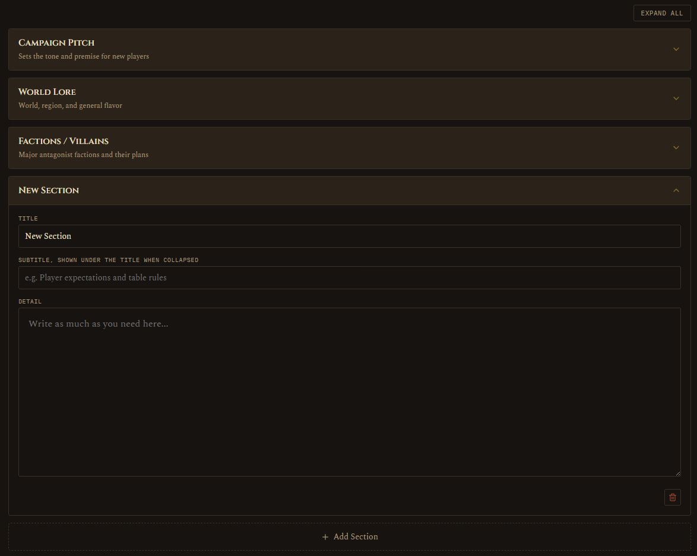

Story
Preparation · Story
Three built-in sections: Campaign Pitch, World Lore, Factions/Villains, plus you can add your own custom sections for anything else, each with a title, an optional subtitle, and free text. Expand or collapse each as needed, collapsed sections stay collapsed even after you switch tabs or restart the app. This is where the big picture lives, the stuff a player would read if you handed them a one-pager about the world.

See also: Gameplay for table logistics and house rules, the other half of campaign-wide prep.